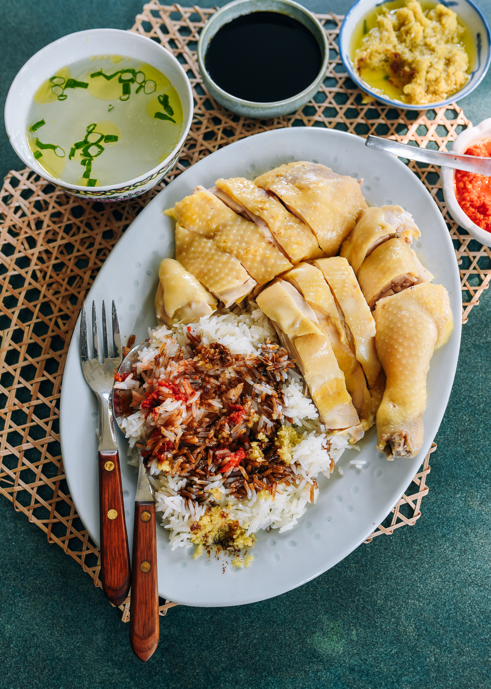

Hainan Chicken Rice

Description
Hainan Chicken Rice is a classic dish beloved by people in Singapore and
all over Asia. Served room temperature, the chicken is incredibly silky.
But the rice is really the star—cooked in the broth from poaching the
chicken, served with a trio of condiments.
This recipe is adapted from
Serious Eats.
Ingredients
- 1 whole chicken (about 3-4 pounds)
- 1 tablespoon salt
- 5 slices ginger
- 4 cloves garlic, smashed
- 2 stalks green onions
- 4 cups jasmine rice
- 4 cups chicken broth (from poaching the chicken)
- 2 tablespoons vegetable oil
- Salt to taste
Instructions
-
Clean the chicken by rubbing it with salt and rinsing it under cold
water. This helps to remove any impurities and gives the skin a nice
texture.
-
In a large pot, bring enough water to cover the chicken to a boil. Add
ginger, garlic, and green onions to the water. Submerge the chicken in
the boiling water, breast side down. Reduce heat to low and simmer for
about 45 minutes to 1 hour, or until the chicken is cooked through.
-
While the chicken is cooking, rinse the jasmine rice under cold water
until the water runs clear. Drain well.
-
In a large pan, heat vegetable oil over medium heat. Add minced garlic
and ginger, sautéing until fragrant. Add the rinsed rice and stir to
coat each grain with the oil and aromatics.
-
Add 4 cups of the chicken broth (from poaching) to the rice. Bring to a
boil, then reduce heat to low, cover, and simmer for about 15 minutes or
until the rice is cooked and fluffy.
-
Once the chicken is cooked, remove it from the pot and let it rest for a
few minutes. You can optionally rub it with sesame oil for extra flavor.
Chop into serving pieces.
-
Serve the chicken on a plate alongside a mound of fragrant rice. Garnish
with cucumber slices and fresh cilantro if desired. Serve with dipping
sauces such as chili sauce, ginger sauce, and soy sauce.
Dipping Sauces
-
Chili Sauce: Mix together 2 tablespoons of chili paste,
1 tablespoon of lime juice, 1 teaspoon of sugar, and a pinch of salt.
-
Ginger Sauce: Combine 2 tablespoons of finely grated
ginger, 2 tablespoons of vegetable oil, 1 tablespoon of soy sauce, and a
pinch of salt.
-
Soy Sauce: A simple mixture of soy sauce with a dash of
sesame oil.